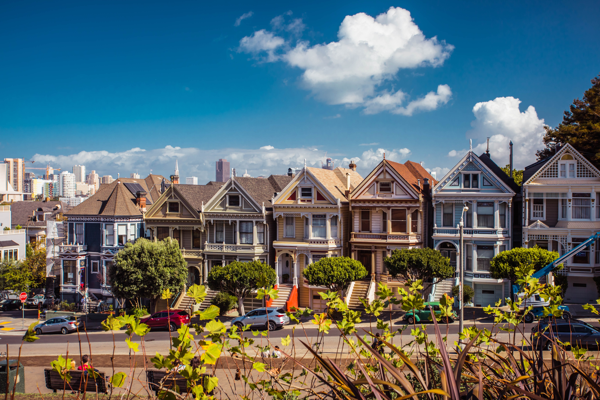

Hello, my name is Hyeji Han. I would like to introduce my second hometown, San Francisco, CA. Here are ten of my favorite spots in San Francisco. Why do I love San Francisco? It is not only because I used to live there, but also because San Francisco is unquestionably one of America's great cities. Everyone is familiar with world-famous landmarks such as the Golden Gate Bridge and the Powell Street cable cars, but this city has so much more to offer both tourists and locals.
1. Alamo Square 2. Cable Car 3. Lombard Street 4. Cable cars in Downtown District 5. Sealions at pier 39 6. Alamo Square with sunset 7. Castro district with diverse culture 8. Mignificient Golden Gate Bridge 9. Palace of Fine Arts 10. Bay Bridge near pier 39
